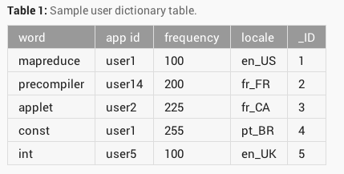

#2.0.1 Provider Basics

- Format mimics relational db
- Primary Key not mandatory **
** The exception is if data is bound to a ListView
#2.0.1.1 Accessing Providers
- Requires ContentResolver object
- Provides basic CRUD operations
- Support services (change notifications)
- Exposes ContentProvider methods
- Handles IPC to provider (queries)
#2.0.1.2 ContentResolver
// Get Content Resolver from component "Context"
resolver = getContentResolver();
// Queries the user dictionary and returns results
mCursor = resolver.query(
UserDictionary.Words.CONTENT_URI, // Content URI of table (data)
mProjection, // Columns to return in result
mSelectionClause // Selection criteria condition
mSelectionArgs, // Selection criteria args
mSortOrder // Sort order for results (rows)
);
#2.0.1.3 Core Content Providers
- Browser (bookmarks, history)
- Calendar (events, attendees)
- CallLog (calls received, placed)
- Contacts (address book profiles)
- MediaStore (metadata for audio, video, images)
- Telephony (mms or sms sent, received)
- UserDictionary (predictive text)
See list here
content://user_dictionary/words/4
- Unique data identifier
- Scheme = provider indicator (content://)
- Authority = provider ID ("user_dictionary")
- Path = data name,type ("words")
- ID = specific data item (ID=4)
#2.0.1.5 Retrieving Data
Request access permissions. Construct and run query.
/**
* STEP 1: Request access permissions for specified data
*
* Done in AndroidManifest.xml by declaring
* where requested permission strings are obtained from the list
* declared by the ContentProvider being interacted with
*
*/
/** STEP 2: Construct your query
*
* Running the query returns a results "Cursor" you step through
*
* Analogous to SQL
* SELECT _ID, word, locale --> projection
* FROM words --> content URI
* WHERE word = --> selection clause, args
* ORDER BY word ASC; --> result sort order
*/
// A "projection" defines the columns that will be returned for each row
String[] mProjection =
{
UserDictionary.Words._ID, // Contract class constant for the _ID column name
UserDictionary.Words.WORD, // Contract class constant for the word column name
UserDictionary.Words.LOCALE // Contract class constant for the locale column name
};
// Defines a string to contain the selection clause
String mSelectionClause = null;
// Initializes an array to contain selection arguments
String[] mSelectionArgs = {""};
// Gets a word from the UI
mSearchString = mSearchWord.getText().toString();
// Remember to insert code here to check for invalid or malicious input.
// If the word is the empty string, gets everything
if (TextUtils.isEmpty(mSearchString)) {
// Setting the selection clause to null will return all words
mSelectionClause = null;
mSelectionArgs[0] = "";
} else {
// Constructs a selection clause that matches the word that the user entered.
mSelectionClause = UserDictionary.Words.WORD + " = ?";
// Moves the user's input string to the selection arguments.
mSelectionArgs[0] = mSearchString;
}
// Does a query against the table and returns a Cursor object
mCursor = getContentResolver().query(
UserDictionary.Words.CONTENT_URI, // The content URI of the words table
mProjection, // The columns to return for each row
mSelectionClause // Either null, or the word the user entered
mSelectionArgs, // Either empty, or the string the user entered
mSortOrder); // The sort order for the returned rows
// Some providers return null if an error occurs, others throw an exception
if (null == mCursor) {
/*
* Insert code here to handle the error. Be sure not to use the cursor! You may want to
* call android.util.Log.e() to log this error.
*
*/
// If the Cursor is empty, the provider found no matches
} else if (mCursor.getCount() < 1) {
/*
* Insert code here to notify the user that the search was unsuccessful. This isn't necessarily
* an error. You may want to offer the user the option to insert a new row, or re-type the
* search term.
*/
} else {
// Insert code here to do something with the results
}
#2.0.1.6 Display Query Results
Cursor = random read access to returned result set.
/**
* Cursor returns list of results (rows).
* Bind to ListView with SimpleCursorAdapter (auto-populates list)
*/
/* Defines a list of columns to retrieve from the Cursor and load into an output row */
String[] mWordListColumns =
{
UserDictionary.Words.WORD, // Contract class constant containing the word column name
UserDictionary.Words.LOCALE // Contract class constant containing the locale column name
};
/* Defines a list of View IDs that will receive the Cursor columns for each row */
int[] mWordListItems = { R.id.dictWord, R.id.locale};
/* Creates a new SimpleCursorAdapter */
mCursorAdapter = new SimpleCursorAdapter(
getApplicationContext(), // The application Context object
R.layout.wordlistrow, // A layout in XML for one row in the ListView
mCursor, // The result from the query
mWordListColumns, // A string array of column names in the cursor
mWordListItems, // An integer array of view IDs in the row layout
0); // Flags (usually none are needed)
/* Sets the adapter for the ListView */
mWordList.setAdapter(mCursorAdapter);
#2.0.1.7 Inserting Data
ContentResolver.insert() --> get URI for inserted item
/**
* Returned value of insert is a content URI to new item in format:
* Uri newItem = content://user_dictionary/words/
* Provider here automatically generates new _ID for item and creates Uri
*
* To retrieve the _ID from this use
* ContentUris.parseId(newUri)
*/
/* Defines a new Uri object that receives the result of the insertion */
Uri mNewUri;
...
/* Defines an object to contain the new values to insert */
ContentValues mNewValues = new ContentValues();
/*
* Sets the values of each column and inserts the word. The arguments to the "put"
* method are "column name" and "value"
*/
mNewValues.put(UserDictionary.Words.APP_ID, "example.user");
mNewValues.put(UserDictionary.Words.LOCALE, "en_US");
mNewValues.put(UserDictionary.Words.WORD, "insert");
mNewValues.put(UserDictionary.Words.FREQUENCY, "100");
mNewUri = getContentResolver().insert(
UserDictionary.Word.CONTENT_URI, // the user dictionary content URI
mNewValues // the values to insert
);
#2.0.1.8 Updating Data
/*
* Defines an object to contain the updated values
* Each object corresponds to one data row
*/
ContentValues mUpdateValues = new ContentValues();
/* Defines selection criteria for the rows you want to update */
String mSelectionClause = UserDictionary.Words.LOCALE + "LIKE ?";
String[] mSelectionArgs = {"en_%"};
/* Defines a variable to contain the number of updated rows */
int mRowsUpdated = 0;
...
/*
* Sets the updated value and updates the selected words.
*/
mUpdateValues.putNull(UserDictionary.Words.LOCALE);
/* Method returns number of rows updated */
mRowsUpdated = getContentResolver().update(
UserDictionary.Words.CONTENT_URI, // the user dictionary content URI
mUpdateValues // the columns to update
mSelectionClause // the column to select on
mSelectionArgs // the value to compare to
);
#2.0.1.9 Deleting Data
/* Defines selection criteria for the rows you want to delete */
String mSelectionClause = UserDictionary.Words.APP_ID + " LIKE ?";
String[] mSelectionArgs = {"user"};
/* Defines a variable to contain the number of rows deleted */
int mRowsDeleted = 0;
...
/*
* Deletes the words that match the selection criteria
* Returns number of rows deleted
*/
mRowsDeleted = getContentResolver().delete(
UserDictionary.Words.CONTENT_URI, // the user dictionary content URI
mSelectionClause // the column to select on
mSelectionArgs // the value to compare to
);
#2.0.1.10 Alternative Access Options
- Batch Accesses (1 transaction, Array result)
- Asynchronous Queries (CursorLoader)
- Via Intents (Delegation) **
Caller can get limited access to specific data without user permission
Ex: Request another app with permissions to do the work and return results
The called app can grant caller permissions to access 'only' these uris by setting flag in Intent result.
The permissions then last only until the current Activity is complete.